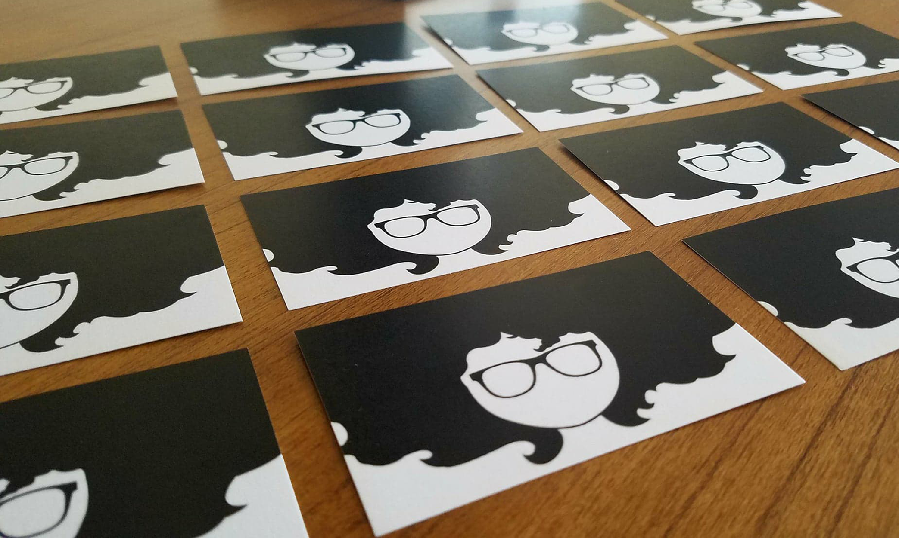

Proficiencies



I'm a digital creative based in Montgomery, AL. I rely on my knowledge of principles in design, rhetoric, and communication to address the ever-changing demands I'm met with as a professional. With every new project, I strive to meet the needs of both my clients and the end users of my products with a unique combination of user-centered design, technology, and innovation.
Here, you'll find a collection of my web design work on CodePen.
I setup an inbox to obtain feedback from donors who encountered issues with our existing donation page. This established an open channel of communication through which we could learn about our donors' unique needs, suggestions, and troubles.
I setup an inbox to obtain feedback from donors who encountered issues with our existing donation page. This established an open channel of communication through which we could learn about our donors' unique needs, suggestions, and troubles.
I setup an inbox to obtain feedback from donors who encountered issues with our existing donation page. This established an open channel of communication through which we could learn about our donors' unique needs, suggestions, and troubles.

Using UX design principles and user research, I redesigned the Southern Poverty Law Center's donation page.
As the Digital Marketing Specialist, I'm in charge of redesigning the donation page to offer a compelling and easy to use donation experience. The donation page is hosted on a different platform, but branding and consistency had to be maintained regardless.
Before picking up a pen or pointing a cursor, I conducted a task analysis to learn what would benefit our donors on the new donation page.
After obtaining the feedback by conducting usability testing, I used the data to generate wireframes and prototypes for internal stakeholders to approve.
I also needed to research best donation page practices and determine what features were necessary to offer our donors and which aspects weren't.
I collaborated with the SPLC's Marketing, Digital, and Design teams to create a donation page that can grow with the needs of the organization and its donors'.
I setup an inbox to obtain feedback from donors who encountered issues with our existing donation page. This established an open channel of communication through which we could learn about our donors' unique needs, suggestions, and troubles.
From this and usability testing, I learned that multiple, single-objective pages would work best for our donors.
After I drafted low-fidelity wireframes for the new page based on direct user feedback, I used Bootstrap to develop dynamic prototypes.
We haven't launched the new donation pages yet, but the live versions of the donation pages are now in the final stage of development. More usability testing will be conducted after the pages go live to ensure that both the SPLC and its supporters' needs are adequately being met.

For this project, I developed a usability test that would result in an intuitive a set of instructions used to teach people how to ship baked goods across the country.
After drafting the instructions, I tested them for usability using theoretical design principles like low-fidelity prototype design, operational prototype design, & talk-aloud protocol.
First, I needed to analyze the audience that would be interacting with my instructions.
Then, using the results from the initial research, I needed to create a low-fidelity design for usability testing.
Finally, I needed to develop a high-fidelity design from the data obtained during the usability test to ensure that my instructions were accessible and usable for my audience.
I conducted a thorough audience analysis and determined that the audience would consist of people who would access the instructions digitally as opposed to using a static document like a book.
Usability testing dramatically influenced the design of my instructions. My initial rapid paper prototype consisted of a Word document that was presented on a computer screen.
Since the instructions held information about actions that had to be carried out in various locations, the final version was a website.
Conducting a usability test allowed me to determine the clarity, accessibility, and functionality of my instructions before completing the design process.
I transformed the Word document into a mobile-optimized website that would give users access to the information from multiple locations and devices.

For this project, I developed a usability test that would result in an intuitive a set of instructions used to teach people how to ship baked goods across the country.
After drafting the instructions, I tested them for usability using theoretical design principles like low-fidelity prototype design, operational prototype design, & talk-aloud protocol.
First, I needed to analyze the audience that would be interacting with my instructions.
Then, using the results from the initial research, I needed to create a low-fidelity design for usability testing.
Finally, I needed to develop a high-fidelity design from the data obtained during the usability test to ensure that my instructions were accessible and usable for my audience.
I conducted a thorough audience analysis and determined that the audience would consist of people who would access the instructions digitally as opposed to using a static document like a book.
Usability testing dramatically influenced the design of my instructions. My initial rapid paper prototype consisted of a Word document that was presented on a computer screen.
Since the instructions held information about actions that had to be carried out in various locations, the final version was a website.
Conducting a usability test allowed me to determine the clarity, accessibility, and functionality of my instructions before completing the design process.
I transformed the Word document into a mobile-optimized website that would give users access to the information from multiple locations and devices.

This is just a small sample of my work. I have several other projects and products I'd love to share!
Thank you for reviewing my portfolio! Please feel free to reach out to me to discuss working together in the future. You can reach me by email at troybdabney@gmail.com or by phone at 334-721-3439.